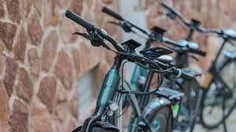
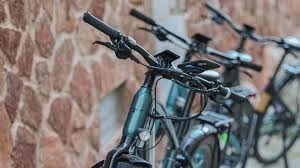

¿Quiénes somos?
BicisVal nació como un pequeño negocio familiar en el corazón de Valencia, fruto de una gran pasión por el ciclismo y la movilidad sostenible. Con más de una década de experiencia, nos hemos convertido en un punto de referencia para quienes disfrutan de moverse sobre dos ruedas, ya sea por deporte, ocio o compromiso con el medio ambiente.
Nos gusta ofrecer un trato cercano y personalizado, ayudando a cada cliente a encontrar la bicicleta que mejor se adapta a su estilo de vida. Creemos en el trabajo bien hecho, en la confianza y en la satisfacción de ver a nuestros clientes volver con una sonrisa.
¿Qué ofrecemos?

En BicisVal encontrarás todo lo que necesitas para disfrutar de la bici en cualquier situación:
- Venta: disponemos de hasta 10 modelos distintos de bicicletas, desde urbanas hasta de montaña, seleccionadas por su calidad, diseño y durabilidad.
- Alquiler: contamos con 4 modelos diferentes de bicicletas para alquiler por horas o días, perfectas para descubrir Valencia de una forma cómoda y ecológica.
- Taller: realizamos 8 tipos de reparaciones y mantenimientos, desde ajustes básicos hasta restauraciones completas. Nuestro equipo técnico cuida cada detalle para que tu bici quede como nueva.
Además, ofrecemos asesoramiento gratuito y revisiones rápidas sin cita previa. Tu bici y tu tiempo son nuestra prioridad.
¿Dónde estamos?

Nos encontramos en el centro de Valencia, en la Calle de la Paz, número 24. Nuestro local cuenta con un pequeño taller visible desde el escaparate y una zona de exposición con las últimas novedades en bicicletas.
Puedes ponerte en contacto con nosotros a través del teléfono 963 123 456 o escribiéndonos a info@bicisval.com.
¡Te atenderemos encantados!